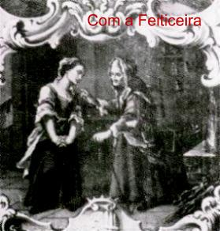
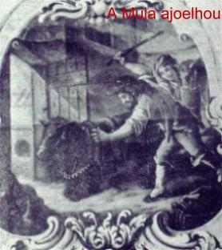
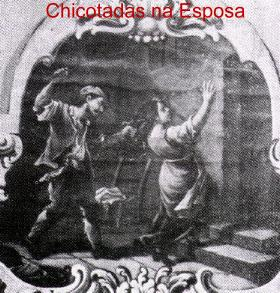
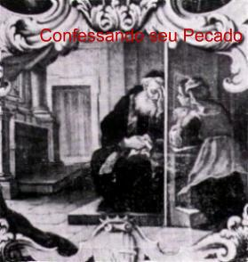
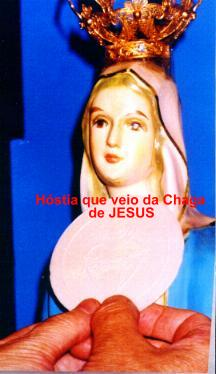
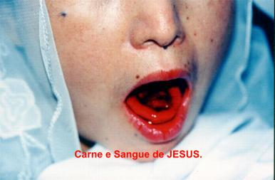

Eucarístico de Lanciano II (número
dois), porque embora denominado Milagre de Offida, na verdade aconteceu em
Lanciano.
Eucarístico de Lanciano II (número
dois), porque embora denominado Milagre de Offida, na verdade aconteceu em
Lanciano.OFFIDA, Itália, ano 1273
Esta Manifestação Sobrenatural também
poderia ser chamada de Milagre Eucarístico de Lanciano II (número
dois), porque embora denominado Milagre de Offida, na verdade aconteceu em
Lanciano.
Giacomo e Ricciarella eram dois jovens recém casados que moravam na zona rural, bem próximo do subúrbio de Lanciano. Mas não viviam em harmonia e numa desejada comunhão amorosa. Ao contrário, revelavam incompatibilidade de gênios, principalmente pelo lado dele, que direcionava sua atenção exclusivamente ao trabalho. Não se conhece o motivo que o levou a proceder assim. Contudo, Ricciarella não concordava com aquela situação e se esforçava, reagindo contra uma série de pequenas ocorrências domésticas insignificantes, mas que ganhavam intensidade e cresciam estimuladas pelo mal-humor do marido, formando barreiras que interferiam de maneira preponderante no viver cotidiano do casal. Acrescente-se que Giacomo era por demais impulsivo e às vezes extremamente severo com a esposa, a ponto de se exaltar e partir para a agressão física.
Ricciarella resistia a tudo com muita bravura e paciência, procurando contornar todas as dificuldades. Ela só queria uma vida melhor para os dois.
Foi assim, que buscando conseguir um meio para converter o grosseiro gênio de seu marido, a fim de que o casal pudesse encontrar um pouco de felicidade e viver em paz, procurou os serviços de uma feiticeira.
A bruxa era famosa e segundo diziam, alcançava feitos admiráveis com a sua alquimia. Por isso mesmo, Ricciarella a procurou cheia de esperanças. A feiticeira lhe recomendou o seguinte:
“Receba a Sagrada Comunhão numa Igreja, mas guarde a Hóstia e leve-a para a sua casa. Coloque-a numa telha de barro em forma de canal para cozinhá-la ao fogo. Transforme-a em pó e vai colocando diariamente na sopa ou no vinho de seu marido. Depois de uma semana volte aqui para me contar o resultado. A transformação nele será visível e benéfica.”
A descrição feita pela feiticeira de como o seu esposo se sentiria sob os efeitos da bruxaria, deu a moça o impulso e a coragem que faltavam, deixando-a animada e até impaciente, com pressa em executar o trabalho.
Todavia, Ricciarella, do mesmo modo que seus pais e irmãos, foram criados na fé católica e por isso, ela sabia que o seu ato era um pecado mortal, um terrível sacrilégio. Então, não é difícil imaginar o quanto ela lutou contra a sua própria consciência, que lhe indicava o caminho do direito e da razão, antes de tomar a decisão de cometer o abominável ato. Mas ela repetia em sua mente para manter a coragem: “È necessário que eu faça isso para converter o meu marido...”
E assim decidida, entrou na Igreja. A Santa Missa já tinha começado. No momento da Comunhão foi receber JESUS acompanhando os fieis que estavam devidamente preparados e que se aproximavam da balaustrada de madeira que separava o Altar do povo. Assim que o sacerdote colocou a Sagrada Hóstia em sua língua, veio rapidamente para a entrada da Igreja e sem que ninguém percebesse, guardou o Santíssimo Sacramento.




Não esperou o fim da cerimônia. Imediatamente
saiu e correu pelas ruas de  Lanciano até a sua casa. Suas mãos tremiam
vigorosamente. Assustada, mas repleta de emoção, pôs em ação a segunda
parte do plano da feiticeira. Acendeu o fogo e encima acomodou uma telha de barro em
forma de canal, igual àquelas que usamos nas cumeeiras das casas. Dentro da telha
colocou a Hóstia e tratou de cozinhá-la. Entretanto, logo que a Sagrada
Espécie foi deixada naquele utensílio, começou a sair uma densa fumaça. Ao redor
da Hóstia Sagrada se transformou em Carne do SENHOR e começou a Sangrar profusamente,
enquanto o centro da Pequena Partícula continuava com o aspecto das Hóstias
que os fieis recebem na Santa Missa. A mulher ficou aterrorizada... Não sabia
o que fazer... O Sangue da Hóstia já cobria o fundo da telha! Ela rapidamente
apagou o fogo e jogou cera encima para cobrir o Sangue, a Carne e a Hóstia.
Encheu o resto da telha com terra e ficou pensando o que devia fazer. Todavia o
Sangue do SENHOR passou por entre a terra e apareceu na parte superior! Ela ainda
mais assustada, pegou uma toalha de fibra e envolveu a telha com tudo. Mas onde
colocá-la? Com uma ferramenta foi até o estábulo, cavou um buraco num
local protegido. Era o cantinho onde a mula de seu esposo gostava de deitar. Ali
enterrou a telha com a Eucaristia.
Lanciano até a sua casa. Suas mãos tremiam
vigorosamente. Assustada, mas repleta de emoção, pôs em ação a segunda
parte do plano da feiticeira. Acendeu o fogo e encima acomodou uma telha de barro em
forma de canal, igual àquelas que usamos nas cumeeiras das casas. Dentro da telha
colocou a Hóstia e tratou de cozinhá-la. Entretanto, logo que a Sagrada
Espécie foi deixada naquele utensílio, começou a sair uma densa fumaça. Ao redor
da Hóstia Sagrada se transformou em Carne do SENHOR e começou a Sangrar profusamente,
enquanto o centro da Pequena Partícula continuava com o aspecto das Hóstias
que os fieis recebem na Santa Missa. A mulher ficou aterrorizada... Não sabia
o que fazer... O Sangue da Hóstia já cobria o fundo da telha! Ela rapidamente
apagou o fogo e jogou cera encima para cobrir o Sangue, a Carne e a Hóstia.
Encheu o resto da telha com terra e ficou pensando o que devia fazer. Todavia o
Sangue do SENHOR passou por entre a terra e apareceu na parte superior! Ela ainda
mais assustada, pegou uma toalha de fibra e envolveu a telha com tudo. Mas onde
colocá-la? Com uma ferramenta foi até o estábulo, cavou um buraco num
local protegido. Era o cantinho onde a mula de seu esposo gostava de deitar. Ali
enterrou a telha com a Eucaristia.
 À noite, quando seu marido voltou do trabalho e
deixou a mula próximo ao estábulo, observou que o animal ficou agitado e não
queria permanecer ali. A mula não quis entrar no estábulo, como era o
costume. Giacomo cansado, ansioso para descansar, vendo aquele comportamento
esquisito do animal, tratou de empurrá-lo de qualquer jeito, para dentro do estábulo,
aplicando-lhe inclusive algumas chicotadas. Diante da violência, o animal
caiu com os joelhos e o peito no chão e permaneceu assim, imóvel no seu local
preferido, quase numa posição de adoração. Giacomo espantado percebeu que
algo havia acontecido, porque observou, o chão tinha sido recentemente
escavado. Entrou em casa e logo ofendeu Ricciarella pelo estranho comportamento
do animal, dizendo que ela era a culpada, que tinha feito algum feitiço e enterrado
no estábulo. E extravasando sua ira, castigou a esposa com diversos golpes de
chicote, que ainda mantinha em suas mãos.
À noite, quando seu marido voltou do trabalho e
deixou a mula próximo ao estábulo, observou que o animal ficou agitado e não
queria permanecer ali. A mula não quis entrar no estábulo, como era o
costume. Giacomo cansado, ansioso para descansar, vendo aquele comportamento
esquisito do animal, tratou de empurrá-lo de qualquer jeito, para dentro do estábulo,
aplicando-lhe inclusive algumas chicotadas. Diante da violência, o animal
caiu com os joelhos e o peito no chão e permaneceu assim, imóvel no seu local
preferido, quase numa posição de adoração. Giacomo espantado percebeu que
algo havia acontecido, porque observou, o chão tinha sido recentemente
escavado. Entrou em casa e logo ofendeu Ricciarella pelo estranho comportamento
do animal, dizendo que ela era a culpada, que tinha feito algum feitiço e enterrado
no estábulo. E extravasando sua ira, castigou a esposa com diversos golpes de
chicote, que ainda mantinha em suas mãos.
Para ela, a vida se transformou num verdadeiro inferno a partir daquele momento. Além de sentir uma grande angústia por estar com a consciência pesada em face de seu grande pecado, sentia que a falta de paciência e os maus tratos de seu marido aumentaram de maneira insuportável.
E assim se passaram sete anos de um tempo difícil e penoso, porque tinha que esconder o seu segredo, suas angústias e seus sofrimentos, carregando viva em seu coração a maldita lembrança de um erro que lhe torturava a alma e a estava deixando em ponto de enlouquecer. Com a mente perturbada e mal organizada acreditava que os maus tratos que recebia de Giacomo faziam parte do castigo que DEUS lhe enviava por causa de sua transgressão. E assim, perdeu todas as esperanças em querer convertê-lo. Por outro lado, guardava uma imensa tristeza pelo crime imperdoável que cometeu contra o SENHOR. Logo contra ELE que nunca lhe fizera nenhum mal! Ao contrário, JESUS já lhe havia socorrido em diversas situações difíceis na vida! Por isso, estava envergonhada com o seu procedimento, chorava e sentia uma profunda angústia, pois pensava em reparar o mal que cometeu, mas não tinha coragem. Queria aproximar-se de um sacerdote para confessar o seu pecado e livrar-se daquela monstruosa culpa, mas imaginava coisas terríveis, como por exemplo, uma violenta reação do padre excomungando-a pelo absurdo pecado. E assim, decorriam os dias e ela não sabia o que fazer.
Entretanto, quando não suportou mais viver com aquela pena imposta por ela mesma durante sete longos anos, Ricciarella entrou em contato com Padre Diotallevi, que pertencia a Ordem de Santo Agostinho e era o Pároco em Lanciano. Arrependida e com o rosto banhado em lágrimas, confessou o seu grave pecado... O sacerdote surpreso e pasmo, a ouviu em silêncio, deixando que ela esvaziasse o coração. Depois, sem que ninguém percebesse, a acompanhou até a casa dela. Entraram no estábulo e cavaram no local. Quando o Padre encontrou a toalha e descobriu o que estava dentro, viu admirado que a Carne que sangrou e a parte central da Hóstia permaneceram incorruptas e perfeitas através dos anos, e que portanto, eram verdadeiramente o Corpo e o Sangue do SENHOR JESUS. Então, respeitosamente pegou a toalha manchada de Sangue e a telha de barro que continha a Carne, o Sangue e o centro da Hóstia Consagrada e levou-os para o Convento Agostiniano em Offida, uma cidade próxima.


Para justificar o seu procedimento, Padre Diotallevi disse que agiu assim por dois motivos: primeiro pensou na segurança do Milagre, tinha medo que malfeitores aparecessem ou que algum fanático quisesse destruí-lo por alguma razão inconfessável; segundo, porque ele mesmo residia no Convento em Offida. Depois, na continuidade dos dias, levou o fato ao conhecimento do Padre Miguel Mallicani, que era o Superior Geral dos Agostinianos e que diante daquela notícia, ficou vivamente interessado no assunto e não permitiu que o Milagre fosse levado para outro local. Em obediência a ordem de seu superior hierárquico, concordou em que o Milagre ficasse definitivamente em Offida.
Padre Mallicani mandou preparar uma Capela especial no Santuário de Santo Agostinho, que passou a ser conhecido como o Santuário do Milagre Eucarístico. O Milagre foi colocado dentro de um rico e precioso Relicário em forma de Cruz, feito em Veneza e pode ser venerado pelos fieis somente no dia 3 de Outubro de cada ano, data em que é festejado o acontecimento. Contudo, a "Telha de Barro" e a "Toalha de Fibra com manchas de Sangue do SENHOR", encontram-se disponíveis a visitação pública na Capela especial.

“NAJU, Coréia do Sul, 1985 a 1999”
Entre as dezenas de Manifestações Sobrenaturais Eucarísticas ocorridas em diversos países, temos que abrir um grande espaço para os acontecimentos em NAJU, porque sem dúvida foram espetaculares, sensacionais e impressionantes sobre todos os aspectos, além de misteriosos e reveladores, porque mostram o empenho e o zelo do CRIADOR em provar a Verdade Cristã. Podemos afirmar que o SENHOR verdadeiramente excedeu, ultrapassou todos os limites possíveis e imagináveis na escala da generosidade, e paternalmente realizou maravilhas extraordinárias e inesquecíveis, para que o mundo inteiro visse, compreendesse a grandeza e a disponibilidade do Amor Divino, e decidisse retribuí-lo buscando a conversão do coração.
Por essa razão, reverenciando a encantadora bondade Divina, decidimos divulgar com maior ênfase aquelas Manifestações do SENHOR, construindo um Site especialmente dedicado aos admiráveis acontecimentos em NAJU.
Nome do Site: “NOSSA SENHORA DE NAJU” (Milagres Eucarísticos)
Ele pode ser encontrado no seguinte endereço:
ou no endereço do PORTAL DO APOSTOLADO:
http://www.apostoladosagradoscoracoes.com/



Antecipando algumas notícias sobre o conteúdo do Site, informamos que é colocado em destaque uma apreciável quantidade de fotografias, que testemunham as ocorrência dos fenômenos sobrenaturais:
a)Por mais de vinte (20) vezes, em diferentes ocasiões, Julia Kim ao receber a Sagrada Comunhão na língua, durante a Santa Missa, a Hóstia Consagrada visivelmente se transforma em Corpo e Sangue do SENHOR na presença das pessoas abismadas e admiradas com o notável milagre. Chocados e repletos de emoção, muitos choram diante da realidade de ver bem a sua frente, a carne viva do próprio DEUS. Os padres e as pessoas que viram de perto o acontecimento milagroso atestam e testemunham o notável fenômeno com fervor e entusiasmo.
b)Da imagem de JESUS Crucificado que se encontra na parede da Capela de Naju, encima do Altar onde está a imagem de Nossa Senhora, por duas vezes Julia viu JESUS Crucificado ganhar vida, e das principais chagas, fluir o Precioso Sangue Divino que logo se transformou em Hóstias brancas e puras, que se desprenderam das chagas e caíram graciosamente, desviando das mãos de Julia que correu para ampará-las e se acomodaram sobre o Altar, aos pés da imagem da MÃE DE DEUS, diante do povo que superlotava a Capela, espantados e cheios de emoção. Quando as Hóstias tocaram o Altar as pessoas disseram que ouviram um barulho como se estivesse acontecendo uma chuva de granizo. Ali aos olhos de todos surgiram de súbito às sete lindas e perfeitas Hóstias que vieram das chagas das duas mãos, das chagas dos pés, da cabeça onde estava a Coroa de Espinhos, da chaga do lado direito onde o centurião romano cravou a lança e da Chaga do Coração, onde a lança penetrou e saiu Sangue e Água.
c)Por duas vezes, Julia colhendo água em uma nascente atrás da Capela, apareceu no fundo da vasilha à imagem de uma Hóstia grande.
d)Sobre o telhado da Capela em Outubro de 1988 a luz solar formou a imagem de uma Hóstia grande encima de um Cálice. Existem muitas fotografias e filmes sobre o fenômeno.
Este pequeno texto tem a intenção de ser uma apresentação e um convite, para que seja visitado o Site “NOSSA SENHORA DE NAJU” (Milagres Eucarísticos) a fim de receberem também o benefício incomparável de conhecer esta impressionante manifestação do CRIADOR e usufruírem das graças que dele emanam.